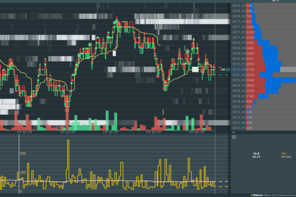

FV Order Flow Toolkit
This is a suite of 4 tools designed to help traders more easily identify specific data events with user defined variables. As we develop more tools and features periodically they will be added to the Order Flow Tool Set as included updates.
This page will help you setup the addons with sample configuration/settings and screenshots.
If you have any questions or need a custom addon/algo you can get in touch via email: fintechvisuals@gmail.com
The tools were developed and tested on Futures Market only.
Demos (Recorded on ES Futures)
-
Pace of Tape and Block Orders:
-
Cumulative Volume Delta Alert and Block Orders:
-
Absorption:
Block Orders
Trigger block trade alerts based on execution side and 3 user adjustable size filters
Sample Settings for ES Futures:
1st Level
Size >= 40 # This will alert at low volume/audio for block trades >= 40 and <= 70
2nd Level
Size >= 70 # This will alert at medium volume/audio for block trades >= 70 and <= 120
3rd Level
Size >= 120 # This will alert at high volume/audio for block trades >= 120
CVD (Cumulative Volume Delta)
Cumulative Volume Delta based on a user defined executed volume quantity with a reset threshold using % Imbalance alerts and indicator markers


Sample Settings for ES Futures:
Total Volume Reset
2000 # Total volume traded at bid + ask before the CVD resets
Alert CVD % >=
200 # % that the alert will trigger, in this case it will trigger when buy or sell CVD is 200% higher than the other side
Buy/Sell Line color
Bookmap Indicator Color for Buy/Sell lines
Buy/Sell Alert Line Style
Bookmap Indicator Line Style
Absorption
Detect high participation trade execution areas commonly referred to as “absorption” with a user defined single or multiple level aggregate volume threshold setting.


Sample Settings for ES Futures:
Absorption Trigger >= X
2500 # This will alert when the absorption on the level (bid or ask) reaches 2500 trades
Absorption Trigger
3 # If "Enable Multi Level" is checked, the addon will alert only when 3 levels are >= 2500
Enable Multi Level
Checked/Unchecked # This setting will tell the addon if we are using single or multi level for alerts
Color
Bookmap Indicator Color for Buy/Sell lines
Buy/Sell Alert Line Style
Bookmap Indicator Line Style
Pace of Tape
Detect instances that exhibit a sudden increase in trade execution activity commonly referred to as Pace of Tape.

Sample Settings for ES Futures:
Interval Seconds >= X
1 # This is the interval which the addon will collect trades, in this case every 1 second
Average Minutes >= X
1 # The addon will calculate the Average number of trades based on every interval for 1 minute
Alert POT >= 200
This will alert a sound when the number of trades in an interval is higher than 200
POT Color
Bookmap Indicator Color for POT line
POT Avg Color
Bookmap Indicator Color for Avg Line